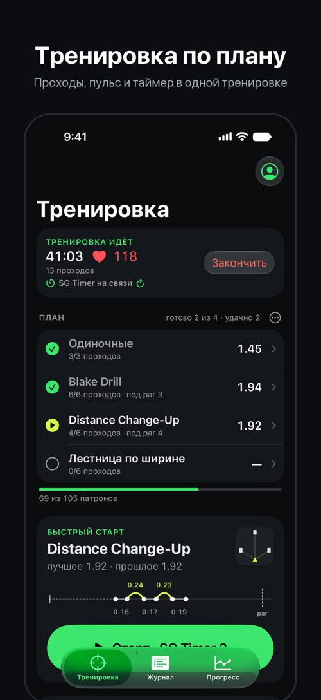
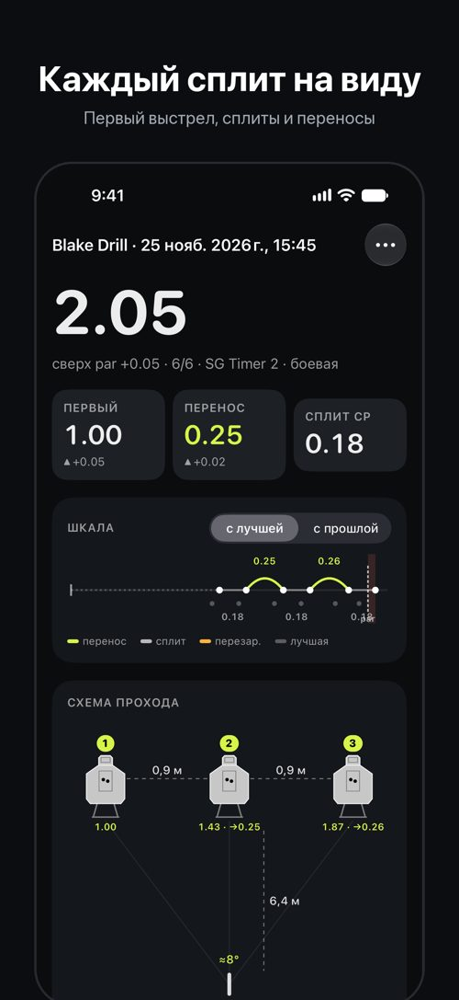
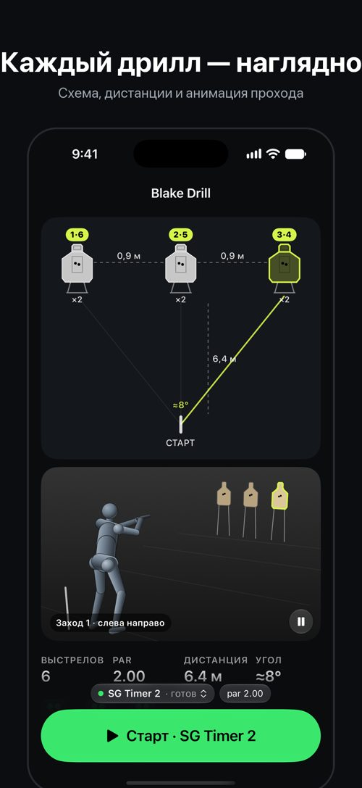
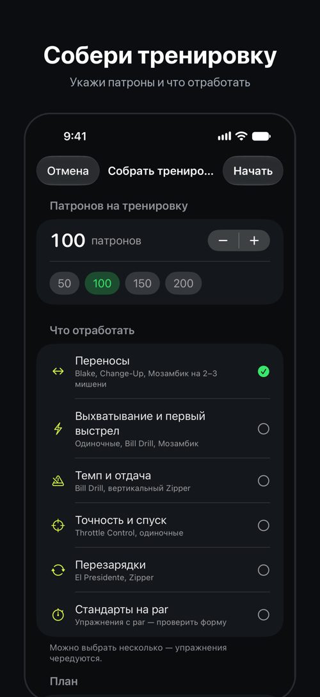
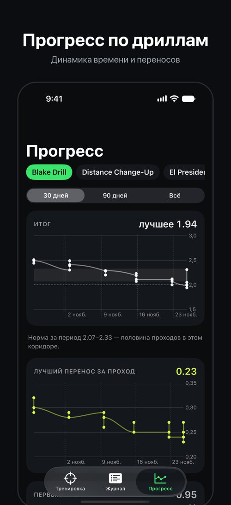

Shooter Ready: Drill Training
Таймер дриллов и тренировочный журнал для спортивной стрельбы — iPhone и Apple Watch.





Что умеет приложение
Каждый сплит и перенос
Время выстрелов раскладывается на первый выстрел, сплиты, переносы между мишенями и перезарядки.
Три источника времени
Вживую с SG Timer 2 по Bluetooth, таймер телефона со стартовым сигналом и par или ручной ввод.
Тренировки
Все проходы одного выхода на стрельбище — в одной тренировке, вместе с пульсом с Apple Watch.
Помощник
Укажите, сколько патронов и что отработать, — получите план из библиотеки упражнений.
Apple Watch
Старт и стоп с руки, живое время, план и пульс.
Прогресс
Журнал всех проходов, лучшее и среднее по каждому дриллу, динамика.
Приватность
Без аккаунта, рекламы и слежки. Данные остаются на вашем iPhone и Apple Watch.
Shooter Ready — тренировочный журнал и таймер. Всегда соблюдайте правила безопасного обращения с оружием и правила стрельбища. SG Timer — товарный знак Shooters Global; приложение не связано с Shooters Global, IPSC и IDPA.